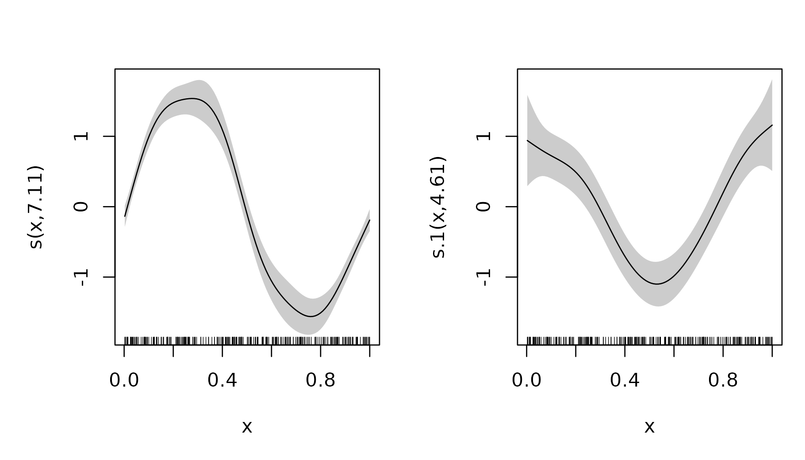
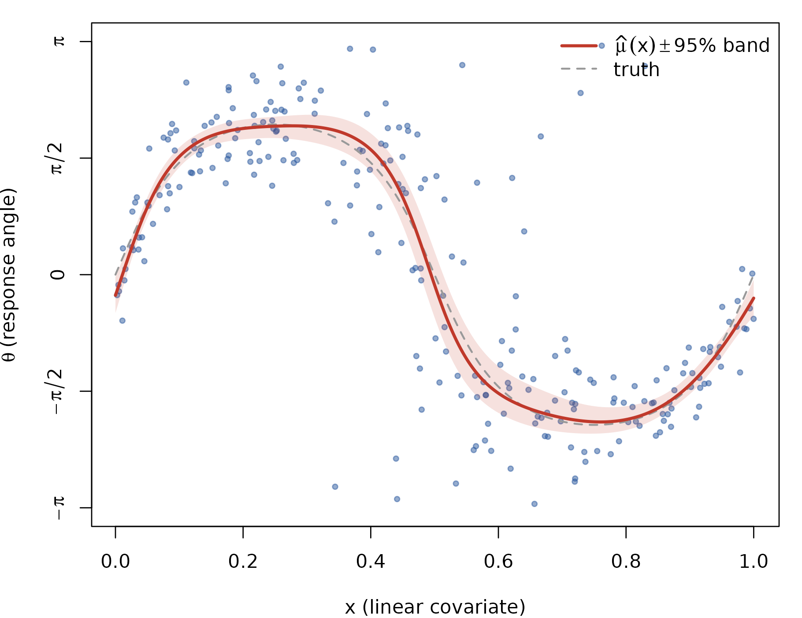
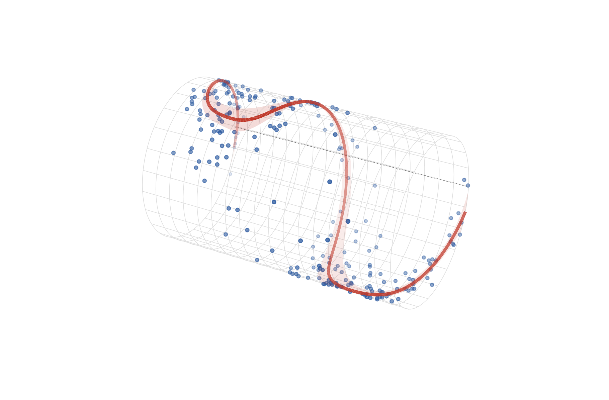
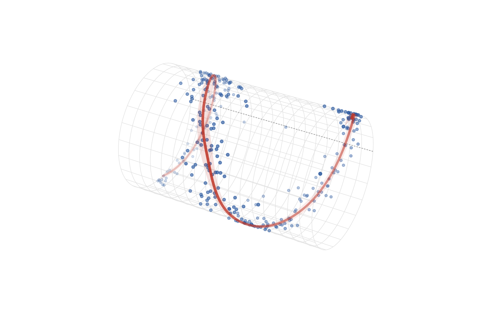

Circular–linear regression on the cylinder
Source:vignettes/articles/circular-linear-regression.Rmd
circular-linear-regression.RmdOne of three response–predictor geometries: C–L · L–C · C–C.
Circular–linear (C–L) regression is the core circlss
case: a circular response
and ordinary covariates
,
with both the mean direction and the concentration getting their own linear predictor and smooths. The natural canvas is a cylinder: the covariate runs along the axis, the response wraps around the circumference, and the fitted mean direction is a curve on the surface.
Family guidance mirrors the C–C article:
vmlss() leads — mean direction (tan-half
link) and concentration (log link) are separate, interpretable
parameters — as long as the mean stays inside one branch
.
When the phase drifts (the response keeps rotating as
grows, a helix on the cylinder), the tan-half map cannot follow it
across
;
pnlss() can.
The distributional fit, with vmlss
A mean direction that swings around a reference as moves, and a concentration that varies with it:
library(mgcv)
#> Loading required package: nlme
#> This is mgcv 1.9-4. For overview type '?mgcv'.
library(circlss)
rvm <- function(n, mu, kappa) {
mu <- rep_len(mu, n); kappa <- rep_len(kappa, n); out <- numeric(n)
for (i in seq_len(n)) {
k <- kappa[i]
a <- 1 + sqrt(1 + 4 * k * k); b <- (a - sqrt(2 * a)) / (2 * k)
r <- (1 + b * b) / (2 * b)
repeat {
z <- cos(pi * runif(1)); f <- (1 + r * z) / (r + z)
cc <- k * (r - f); u2 <- runif(1)
if (cc * (2 - cc) - u2 > 0 || log(cc / u2) + 1 - cc >= 0) {
out[i] <- sign(runif(1) - 0.5) * acos(max(min(f, 1), -1)) + mu[i]
break
}
}
}
atan2(sin(out), cos(out))
}
set.seed(20260612)
n <- 250
x <- runif(n)
mu_true <- 2 * atan(1.6 * sin(2 * pi * x))
kappa_true <- exp(1.3 + 0.9 * cos(2 * pi * x))
dat <- data.frame(theta = rvm(n, mu_true, kappa_true), x = x)
b <- gam(list(theta ~ s(x), ~ s(x)),
family = vmlss(), data = dat, method = "REML")
summary(b)
#>
#> Family: vmlss
#> Link function: tanhalf log
#>
#> Formula:
#> theta ~ s(x)
#> ~s(x)
#>
#> Parametric coefficients:
#> Estimate Std. Error z value Pr(>|z|)
#> (Intercept) 0.02990 0.04863 0.615 0.539
#> (Intercept).1 1.31958 0.08459 15.600 <2e-16 ***
#> ---
#> Signif. codes: 0 '***' 0.001 '**' 0.01 '*' 0.05 '.' 0.1 ' ' 1
#>
#> Approximate significance of smooth terms:
#> edf Ref.df Chi.sq p-value
#> s(x) 7.110 8.085 780.44 <2e-16 ***
#> s.1(x) 4.608 5.631 79.98 <2e-16 ***
#> ---
#> Signif. codes: 0 '***' 0.001 '**' 0.01 '*' 0.05 '.' 0.1 ' ' 1
#>
#> Deviance explained = 63.4%
#> -REML = 247.47 Scale est. = 1 n = 250The two estimated smooths on the link scale — this per-parameter readout (location and concentration, each with its own credible band) is the distributional-regression payoff:
plot(b, pages = 1, scheme = 1)
Flat view
The 95% band for is the link-scale interval pushed through the monotone tan-half link:
xg <- seq(0, 1, length.out = 400)
prl <- predict(b, newdata = data.frame(x = xg), type = "link",
se.fit = TRUE)
mu_hat <- 2 * atan(prl$fit[, 1])
mu_lo <- 2 * atan(prl$fit[, 1] - 1.96 * prl$se.fit[, 1])
mu_hi <- 2 * atan(prl$fit[, 1] + 1.96 * prl$se.fit[, 1])
op <- par(mar = c(4, 4, 1, 1))
plot(dat$x, dat$theta, pch = 19, col = adjustcolor("#2c5aa0", 0.5),
cex = 0.6, xlab = "x (linear covariate)",
ylab = expression(theta ~ "(response angle)"),
ylim = c(-pi, pi), axes = FALSE)
axis(1)
axis(2, at = c(-pi, -pi/2, 0, pi/2, pi),
labels = expression(-pi, -pi/2, 0, pi/2, pi))
box()
polygon(c(xg, rev(xg)), c(mu_lo, rev(mu_hi)), border = NA,
col = adjustcolor("#c0392b", 0.15))
lines(xg, 2 * atan(1.6 * sin(2 * pi * xg)), col = "gray60",
lwd = 1.6, lty = 2)
lines(xg, mu_hat, col = "#c0392b", lwd = 2.6)
legend("topright", bty = "n", lwd = c(2.6, 1.6), lty = c(1, 2),
col = c("#c0392b", "gray60"),
legend = c(expression(hat(mu)(x) %+-% "95% band"), "truth"))
par(op)Remember the vertical axis is a circle — the top and bottom edges are the same line. The cylinder shows it without the cut.
The cylinder
maps to
with the covariate stretched along the axis. Same toolkit as the torus
article: persp() for the projection matrix,
trans3d() for drawing, depth-based fading, and the 95% band
as a translucent ribbon (the dashed axial line is
,
the reference direction):
cyl_xyz <- function(x, theta, L = 1.7, r = 1.05) {
list(x = L * (2 * x - 1), # covariate [0, 1] -> [-L, L] along the axis
y = r * cos(theta),
z = r * sin(theta))
}
# view-space depth from the persp transformation matrix
depth3d <- function(x, y, z, pm) {
p <- cbind(x, y, z, 1) %*% pm
p[, 3] / p[, 4]
}
draw_cylinder <- function(dat, mu_hat, xg, lo = NULL, hi = NULL,
L = 1.7, r = 1.05,
theta_view = 30, phi_view = 28) {
op <- par(mar = c(0.2, 0.2, 0.2, 0.2))
on.exit(par(op))
pm <- persp(x = c(-L - 0.15, L + 0.15), y = c(-r - 0.2, r + 0.2),
z = matrix(c(-r, -r, r, r), 2, 2),
zlim = c(-r - 0.4, r + 0.4),
theta = theta_view, phi = phi_view, d = 4,
scale = FALSE, expand = 1,
col = NA, border = NA, box = FALSE, axes = FALSE)
## wireframe: rings at fixed x, axial lines at fixed theta
thd <- seq(-pi, pi, length.out = 80)
for (p in seq(0, 1, length.out = 18)) {
w <- cyl_xyz(rep(p, length(thd)), thd, L, r)
lines(trans3d(w$x, w$y, w$z, pm), col = "gray88", lwd = 0.6)
}
xd <- seq(0, 1, length.out = 120)
for (t in seq(-pi, pi, length.out = 25)[-1]) {
w <- cyl_xyz(xd, rep(t, length(xd)), L, r)
lines(trans3d(w$x, w$y, w$z, pm), col = "gray88", lwd = 0.6)
}
## theta = 0: the reference-direction line along the axis
w <- cyl_xyz(xd, rep(0, length(xd)), L, r)
lines(trans3d(w$x, w$y, w$z, pm), col = "gray55", lty = 3, lwd = 0.9)
## data on the surface, depth-faded
w <- cyl_xyz(dat$x, dat$theta, L, r)
dp <- depth3d(w$x, w$y, w$z, pm)
a <- 0.15 + 0.7 * (dp - min(dp)) / diff(range(dp))
pt <- trans3d(w$x, w$y, w$z, pm)
ord <- order(dp)
points(pt$x[ord], pt$y[ord], pch = 19,
cex = 0.4 + 0.25 * a[ord],
col = sapply(a[ord], function(ai) adjustcolor("#2c5aa0", ai)))
## 95% ribbon, depth-ordered translucent quads
if (!is.null(lo) && !is.null(hi)) {
K <- 4
i0 <- seq_len(length(xg) - 1)
quads <- list()
for (k in seq_len(K)) {
t0 <- lo + (hi - lo) * (k - 1) / K
t1 <- lo + (hi - lo) * k / K
for (i in i0) {
th <- c(t0[i], t0[i + 1], t1[i + 1], t1[i])
ph <- c(xg[i], xg[i + 1], xg[i + 1], xg[i])
w <- cyl_xyz(ph, th, L, r)
quads[[length(quads) + 1]] <-
list(p = trans3d(w$x, w$y, w$z, pm),
d = mean(depth3d(w$x, w$y, w$z, pm)))
}
}
dq <- vapply(quads, `[[`, numeric(1), "d")
aq <- 0.05 + 0.13 * (dq - min(dq)) / diff(range(dq))
for (j in order(dq)) {
polygon(quads[[j]]$p$x, quads[[j]]$p$y, border = NA,
col = adjustcolor("#c0392b", aq[j]))
}
}
## fitted mean-direction curve, depth-painted
w <- cyl_xyz(xg, mu_hat, L, r)
dp <- depth3d(w$x, w$y, w$z, pm)
cv <- trans3d(w$x, w$y, w$z, pm)
a <- 0.25 + 0.75 * (dp - min(dp)) / diff(range(dp))
seg <- data.frame(x0 = head(cv$x, -1), y0 = head(cv$y, -1),
x1 = tail(cv$x, -1), y1 = tail(cv$y, -1),
d = head(dp, -1), a = head(a, -1))
seg <- seg[order(seg$d), ]
segments(seg$x0, seg$y0, seg$x1, seg$y1,
col = sapply(seg$a, function(ai) adjustcolor("#c0392b", ai)),
lwd = 2.2 + 1.6 * seg$a, lend = 1)
invisible(pm)
}
draw_cylinder(dat, mu_hat, xg, lo = mu_lo, hi = mu_hi)
The fitted mean direction swings around the reference line and back — it never wraps the tube, which is exactly the class the tan-half link can represent.
Drifting phase: the helix, with pnlss
If the response keeps rotating as
grows — a phase that advances,
— the mean must cross
and wrap, which vmlss cannot do on any branch.
pnlss represents it with two ordinary smooths,
and
,
whose angle winds freely:
set.seed(20260612)
n <- 300
x2 <- runif(n)
dir_true <- 3 * pi * x2 - pi / 2 + 0.4 * sin(2 * pi * x2) # 1.5 turns
gamma_true <- exp(0.7 + 0.3 * cos(2 * pi * x2))
theta2 <- atan2(gamma_true * sin(dir_true) + rnorm(n),
gamma_true * cos(dir_true) + rnorm(n))
dat2 <- data.frame(theta = theta2, x = x2)
b2 <- gam(list(theta ~ s(x, k = 12), ~ s(x, k = 12)),
family = pnlss(), data = dat2, method = "REML")
pr2 <- predict(b2, newdata = data.frame(x = xg), type = "response")
dir_hat <- atan2(pr2[, 2], pr2[, 1])
# delta-method band: joint Vp through atan2(mu2, mu1)
Xp <- predict(b2, newdata = data.frame(x = xg), type = "lpmatrix")
lpi <- attr(Xp, "lpi")
X1 <- Xp[, lpi[[1]], drop = FALSE]
X2 <- Xp[, lpi[[2]], drop = FALSE]
V <- b2$Vp
v11 <- rowSums((X1 %*% V[lpi[[1]], lpi[[1]]]) * X1)
v22 <- rowSums((X2 %*% V[lpi[[2]], lpi[[2]]]) * X2)
v12 <- rowSums((X1 %*% V[lpi[[1]], lpi[[2]]]) * X2)
m1 <- pr2[, 1]; m2 <- pr2[, 2]; r2 <- m1^2 + m2^2
se_dir <- sqrt(pmax(m2^2 * v11 + m1^2 * v22 - 2 * m1 * m2 * v12, 0)) / r2
draw_cylinder(dat2, dir_hat, xg, phi_view = 32,
lo = dir_hat - 1.96 * se_dir, hi = dir_hat + 1.96 * se_dir)
A helix: the fitted direction wraps the cylinder one and a half times
between
and
,
delta-method ribbon along for the ride. The same trade as on the torus
applies — pnlss buys unbounded rotation at the price of
entangling direction and concentration in
.
Same models, same numbers, in Python
Both fits are the mgcv twins of pycircstat2’s
CLRegression(..., family=vmlss | pnlss) and are
differentially tested against it on every release — identical data,
Newton-REML both sides (see tests/testthat/test-*-parity.R
and dev/parity/ in the repository).